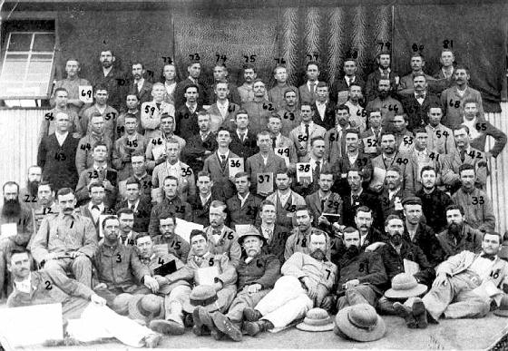
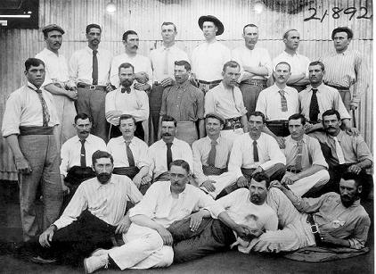
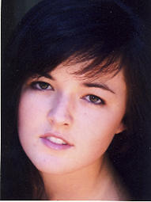
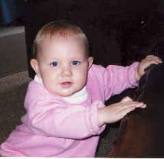
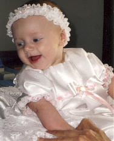
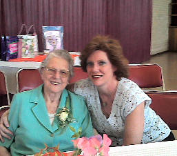
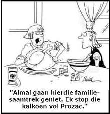
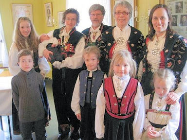
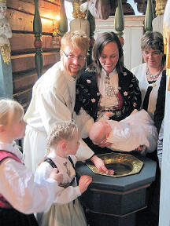
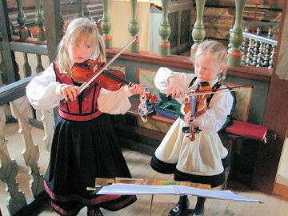

|
Indeks: |
Nadat ons in die vorige Haantjie berig het oor die monument wat in Comodoro Rivadavia, Argentinië opgerig is ter ere van die Boere wat Argentinië toe emigreer het, het Jan (JJP) Henning (b6.c1.d3.e5.f11.g5.) van Bloemfontein op die beriggie gereageer.
"N.a.v my epos aan jou oor die artikel "Monument te ere van die Boere in Argentinië" in die vorige Haantjie, het jy vir my Marita van Dijk se e-posadres gegee en ons twee gesels nou te lekker per epos. Ons gesels o.a. ook oor die Argentynse Yerba Mate (gesondheidtee) wat ons as kinders saam met ons ouers gedrink het. Marita (Maria Cornelia Elizabeth - b6.c1.d3.e5.f3.g5.h4) drink nog steeds mate en sy het my begeester om weer te begin mate drink, nie net uit tradisie nie maar veral ook omdat dit so gesond is. Marita is die dogter van my neef Paul (SJP), seun van Pieter Hendrik Henning.
Ek het toe aan die Argentynse Ambasade in SA geskryf en vandaar het ek en Marita die spoor gevat en verskaffers in SA van Yerba Mate (die groen "teeblare"), die kalbas waaruit dit gedrink word (mate calabaza) en die pypie met siffie vooraan (bombilla) gekry. Ek het toe 'n skedule opgestel waarop al hierdie inligting vervat is en 'n webtuiste adres waar volle inligting oor Yerba Mate gekry kan word. Marita en ek is van mening dat daar baie Henning afstammelinge in SA is van die Argentynse boere, wat graag inligting oor die beskikbaarheid van mate in Suid-Afrika sou wou hê. As gevolg van die gesondheidswaarde daarvan is ons twee ook oortuig dat daar ander Hennings is wat daarmee sou wou kennis maak.
Marita het dus 'n pragtige artikel hieromtrent geskryf - duidelik haar oupa PH Henning se talent geërf! Ek heg graag vir jou Marita se artikel hierby aan asook die skedule oor die verskaffers vir publikasie in 'n volgende Haantjie indien jy daarmee genoë neem".
Enigiemand wat meer van Yerba Mate (gesondheidtee) wil weet, kan gerus met Jan Henning of Marita van Dijk kontak maak. Hulle E-Posadresse is onderskeidelik: Henning JJP (Jan) [henning.jan@gmail.com] en Marita van Dijk [maritavdijk@gmail.com]

Die Anglo Boere-oorlog 1899 - 1902 is oor die algemeen redelik goed gedokumenteer - so ook die Henning familie se betrokkenheid by daardie oorlog. Van tyd tot tyd kry ons egter nog foto's van Hennings wat deelgeneem het. Ons het onlangs die volgende twee foto's wat in die Diyatalawa Krygsgevangenekamp, Ceylon geneem is, raakgeloop.
|  |
no57 = JL Henning en no 58 = JJ Henning. Ongelukkig kan ons beide nie positief identifiseer nie. JL kan moontlik b5.c1.d3.e1.f2. Johannes Lodewikus Henning *7-6-1880 wees en JJ kan sy broer b5.c1.d3.e1.f1. Joseph Johannes Philippus *20-3-1879 of hul oom b5.c1.d3.e6. Joseph Johannes Philippus Henning *25-10-1862 wees. Eersgenoemde blyk die mees waarskynlike te wees
|  |
Jong mans uit die Rouxville en Zastron distrikte. Agterste ry, heel regs b1.c3.d7.e9. Nicolaas Johannes Henning *7-8-1880. Tweede ry, heel links, vermoedelik b1.c3.d10.e9. Johannes Hendrik (Hennie) Henning *21-1-1882, tweede van links b1.c3.d10.e7. Christiaan Rudolf (Chrisjan Houtbeen) Henning *3-8-1877. Hy was die koorleier op die eiland. Heel regs, JH Henning. Ongelukkig is daar te veel JH Henning's op Ceylon en kan ons hom nie positief identifiseer nie

Van tyd tot tyd kry ons navrae van Hennings in Amerika of ons nie meer inligting oor hulle familie het nie. Al hierdie mense het egter onvolledige gegewens om enigsins van hulp te wees. Onlangs het ons egter 'n E-Pos van 'n Bruce Henning van High Ridge, Missouri ontvang. Sy oom (Eugene Henning) het jare gelede reeds 'n geslagsregister van hulle familie saamgestel. Volgens hierdie geslagsregister het hulle voorsate reeds gedurende die 1730's vermoedelik vanaf Ierland na Virginia in die VSA emigreer. Dié oom het gedink dat die naam Henning in die Britse eilande ontstaan het, gevolglik het hy slegs Britse bronne geraadpleeg.
Die dokument wat Bruce Henning vir ons gestuur het, was wel getik, maar is so swak dat groot dele bykans onleesbaar is. Ons het Bruce aangeraai om die dokument in geheel te probeer ontsyfer en in 'n woordverwerkingspakket oor te tik. Daarna kan ons dit verwerk en hopelik as die geslagsregister van 'n Amerikaanse Henning familie op die Henning webwerf op internet plaas.
Bruce het as volg op ons versoek gereageer:
"To answer some of your questions, yes I am married to my lovely wife Debi both age 47, we have two daughters Tess 15yrs. old and Jenna 10yrs old.
We live in High Ridg, Missouri which is about 20 miles southwest of Saint Louis.
I have two sisters Nancy 50 yrs old and Debbie 46 yrs old and they live in the area.
I took the document down to the local library to get a hard copy when I get it back I will see if mabey my daughter will take on the task of converting it to a word document.
I am an electrician as was my father and his father before him.
Thanks for you help and input, this seams to be the start of something pretty cool."


b6.c1.d3.e5.f1.g1.h2. Prof Josef Jooste Henning van Hartenbos het vir ons laat weet dat sy kleindogter, Belindi Henning ook matriek aan die einde van 2009 geslaag het. Sy is die dogter van Josef Jooste - en Linda Jacobie Henning van Durbanville.
Belindi het matriek met ses onderskeidings aan die Hoërskool Durbanville geslaag. Sy het ook op die Leerlingraad van haar skool gedien.
Belindi gaan hierdie jaar voorlopig nie universiteit toe nie, aangesien sy besluit het om eers verskillende studierigtings te ondersoek, voor sy haar finale keuse maak. So het sy byvoorbeeld 'n kursus geloop wat haar toerus met kennis van outisme en hoe om met outistiese kinders om te gaan. Vir die res van die jaar gaan sy verskillende ander studierigtings ondersoek.

Johanna Henning, vrou van wyle Pieter Hendrik Henning (b1.c6.d3.e7.f8.g2.) van Doornpoort is sommer 'n baie trotse ouma. Oor die afgelope twee jaar het sy nog twee kleinkinders bygekry. Haar dogter, Melanie (h3) en haar man Willie Palmer se tweede kleinding - 'n dogtertjie met name Jessica is op 11 Oktober 2008 te Montana, Pretoria gebore.
Ouma Johanna se seun, b1.c6.d3.e7.f8.g2.h4. Abraham Stephanus en sy vroutjie, Marié, se eerste kind - ook 'n dogtertjie - met name Megan is op 6 Julie 2009 te Montana, Pretoria gebore.
|  |  |
Links: Jessica Palmer *11-10-2008 en regs Megan Henning *6-7-2009

Brief van Carol Allan. Ons het die volgende pragtige brief van b6.c3.d9.e4.f1.g1.h1. Carol Allan (gebore Henning) *14-8-1954 van Edenvale ontvang
Hope this e mail finds you both in good health, and a belated New Year greeting from my family to you and yours. Time has flown faster than the speed of light!
My husband John and I have been blessed by two intelligent and beautiful children who are now adults. Heather Derwent ( born 2.11.1981) and Sarah Bronwen born 5.6.1987). They excelled at school, on the sportsfield and in the classroom. Heather studied medicine at Wits Medical School, graduating in 2006, then her long time boyfriend Mark, asked us for her hand in marriage, the wedding took place in June 2007.Whilst working she has given us two beautiful grandchildren, Cameron Gould, born 23.5.2007, and Hailey Elizabeth Gould, born 4.11.2009, all of this AND specialising in Obstetrics & Gynaecology. She works long hours, but she loves her job. Sarah took a "gap year" after matriculating. She travelled to Australia to support our cricket team and crossed Australia all on her own, on arriving home she ensured that she had a job and had decided to do an LLB at Wits. She is in her final year and has to work at the Law Clinic for a while this year. She too, is in a committed relationship with a very good young man who attended King Edward V11, which is my husband' AlmaMata.
My 91 year old father in law is battling to trace a certain period of HIS father's adult life. My father in law has explored so very many channels as he is writing his memoires and as we know time now is important. If I sound "voor op die wa" please accept my apologies. Any assistance or tips you may have after the magnificent work you have done over the years would be most gratefully appreciated. When his time comes I would be so happy to have filled that gap.
Kindly reply to this email address, it is my husband's. With good wishes, Carol Allan. I shall get all the information you requested with regard to my father in law, who still goes to work every day. He is Professor of Anatomy at Wits and has been for 67 years."
Brief van Mauritz Henning. Ons ou staatmaker, b6.c4.d1.e5.f9.g6. Mauritz Martin Henning *10-4-1936 van Theresapark, Pretoria-Noord het vir ons die volgende ontstellende berig gestuur:

"Ek het pas verneem dat my neef Evert Philippus Henning *25-10-1914 [b6.c4.d1.e5.f4.g3] se vrou Sophia Marga-retha [Fya] [Geb du Plessis] op 14 Januarie 2010 oorlede is. Sy was 92 jaar oud.
Sy het in Koster in `n tehuis vir bejaardes gewoon, het geval en het haar arm gebreek. Sy is na die plaaslike hospitaal geneem waar sy die swakste denkbare versorging gekry het. Daar was geen X straal masjiene nie en sy is net laat lê waar sy nie eers skoongemaak is nie [sy was in doeke].
Jan Henning, die advokaat, het toe hy haar besoek het gesien in watter elende sy is. Hy het aangedring dat hulle haar na Swartruggens neem waar geen persoon was om die X straal plate te neem nie. Hulle het ook geweier dat `n privaar dokter haar by Koster sien. Sy is teruggestuur tehuis toe vir beter versorging maar die arm het so seer geword dat sy uiteindelik [met die kerk se hulp] na `n privaathospitaal op Klerksdorp gestuur is. Hulle het vasgestel dat die arm se been deur die vel gesteek het en weer teruggetrek het. Dit het septies geword. Sy is daar geopereer omdat daar reeds "Gangreen" ingetree het. Sy was toe al baie swak en is die volgende dag oorlede. Jan Henning hulle gaan beslis die saak verder neem.
Sy is in die graf by Evert in Brits begrawe."

Die volgende briewe van buitelandse Hennings maak interessante leesstof:
1. My grandfather Julius, or his parents migrated from Germany late 1800's. He lived in Bowden South Australia. His wife Constanca died aged 24. He had 2 sons George and Victor
2. I have been trying to locate the family of Bert (Borge) Henning Metz. He is my great grandfather. He had a son, Borge Henning Metz, Jr., born Oct 2, 1907 in Denmark with an Elma Petersen. She resided at a Mrs. Caroline Petersen's house at Drogersgade 8, Sundby, III Sal. Denmark.
We think that my great grandfather's name was really Bert Henning and he was originally from Metz, France (we were told that my great grandfather was of the House of Metz). My grandfather and his mother immigrated to the US in 1919. Their destination was Salt Lake City, UT, USA. If you have any information, that would be wonderful! Thank you for your help! Briana Metz

3. Bula from the Fiji Island in the South Pacific. My name is Bryan Hennings & I'm just checking out your Henning web site. I am a 5th generation Hennings living in Fiji & my great/great grand father Fred William Hennings came to Fiji from Bremen Germany in the 1840's. Hoping to hear from you so we can trace our family connections. You might be my long lost cousin, ha! ha! Please reply. Bryan Wallace Hennings
4. In researching my husband's family I found the name Maria Henningsdtr, meaning daughter of Henning, married to Jakob Pedersen (of Sunde, born 1739 and died 1797) married 1789 in Hustad church in Norway
5. I'm the son of Paul Christian Henning and Maria Henning former Haar. Both were born in 1913 in Knittlingen, Germany. Do you know anything about the history of this part of the Henning family? I'm living in Portugal. Gerhard Rudi Henning
6. Hi!!: Im Ariel Hennings from Lima Peru, My family in Peru, has commissioned me that it look for all the necessary information about our anchestries and as it was that they arrived to this country.
I dont have a lot of information, only, that my grangranfather (Karl Hennings) arrive of Germany. Speak with the embassy here in Peru and suggested me that it look for in the "General File of the Nation" for the exact date and name of the ship that he use for arrive to Peru.
Pls, I dont know where or how begin this, can you help me? Thanks a lot,
Ariel Hennings
7. Can you help or suggest any clue:for a PhD I need to find out if Paul Henning (producer) and Don Henning(teacher and chaplain in US army (WWII) are relatives.
8. I have reviewed the Dutch data from this website and I would like to contact the person or persons that compiled the data. The earliest data in the Dutch genealogy is 1763, but my Irish ancestors left the Netherlands with King William of Ornage as part of the army that fought in the Battle of the Boyne". I am interested in finding any researchers who would know Henning history in the Netherlands in the 1600s. Roy Henning
9. My daughter and I would very much like to assist you and the Henning Family League with what information we've collected. It may be a month or two before we can put it together.
I also have met a coworker who's mother is a Henning from Norway. I've shared your site with her and I'll see if she can contribute what they have learned about their clan.
Thank you and the South African League for your efforts.
Howard Henry Henning

Baie dankie aan almal wat finansiële bydraes oor die afgelope drie maande aangestuur het. Ons wil u die versekering gee dat elke sent van hierdie geld in belang van die Henning Familiebond bestee word. Soos gebruiklik vermeld ons die name van alle lede wat bydraes van R200.00 of meer aangestuur het.
CB (Neels) Henning van Tampa, Florida, VSA - R1300.00
NJ (Nico) Henning van Die Wilgers, Pretoria - R200.00
PB (Pieter) Henning van Sinoville, Pretoria - R300.00
Mev W (Wiena) Wilkinson (gebore Henning) van Paarl - R300.00
MC (Marthinus) Henning van Welkom, 'n lewenslange lid - R300.00
PH (Piet) Henning van Alberton - 250.00
JB (John) Henning van Maclear, 'n lewenslange lid - R200.00
Mev MCE (Marita) van Dijk van Somerset-Wes - R350.00
Dr MEJ (Tjol) Henning van Lyttelton, Centurion - R300.00
Ons vermeld ook graag die name van Jan Henning van Glenstantia, Pretoria en Henning Pieterse van Rietvalleipark, Pretoria wat maandeliks per debietorder bydraes lewer.
Die geouditeerde finansiële state van die Familiebond vir die jaar 2009 is beskikbaar. Enige lid wat insae in die state wil kry, kan slegs 'n versoek tot die Bondsekretaris rig - kontakbesonderhede op die eerste bladsy.

Ds Bjarne Fowels van Hjelmeland, Noorweë, wat 'n nasaat van b7.c8.d1. Martha Henning (getroud Zurich) is, het vir ons laat weet dat sy dogter, Sunniva Fowels-Holberg en haar man hulle derde kind, 'n seuntjie gedurende die Paasnaweek gedoop het. Die pa, Ds Björn Holberg het self die doopplegtigheid in die Flosta gemeente van die Noorweegse kerk waargeneem. Die dopeling se volle name - Bror Benjamin Fowels-Holberg *19-1-2010, gedoop 5-4-2010.
Let veral op hoe mooi die hele familie in hulle nasionale volksdrag lyk
|  |  |

Hartlike Familiebond groete aan al ons Haantjies!